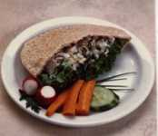
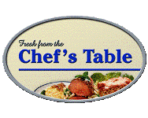
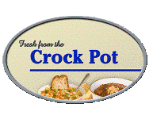

Services
Food Service Management
- Total Management
- Twelve Point Program
- Consulting
- Purchasing
- Inservices
- Staff Training
- Menu Modules©
- NutriBase©
- Registered Dietitian Services
Total Management
NMS provides the onsite management staff to direct your food service department, guided by your philosophy. We can deliver a complete consulting program, total purchasing program, trained management staff, Regional Director coverage, pay all food service invoices and provide one monthly financial statement.
Twelve Point Program
Our Twelve Point Program takes a systematic approach to upgrade areas of concern. Each month one topic is identified and concrete, specific goals are planned and achieved. Each accomplishment moves the department one step further in its search for excellence.
Consulting
NMS works with your department head to cover budgets, communication, inservice, sanitation, accreditation, menu development, standardized recipes, production methods, meal service, meal presentation, staffing, scheduling, purchasing, nutrition, equipment, quality assurance, department evaluation and diversified revenue.
Purchasing
NMS works with your department head by professionally monitoring a cost effective purchasing program. Supplier analysis, listings, order / delivery schedules, volume pricing, competitive quotes, order forms, monthly grocery tenders, yearly supply contracts, inventory control and one monthly payable are components of our purchasing program.
Inservices
NMS can deliver over 200 inservices to compliment your education programs for Dietary and Nursing staff. We are constantly developing new material for best practices and standards in long term care to enhance resident satisfaction, resident care and facility efficiency.
Our Modules contain multiple inservices. We would be pleased to provide you with a full list of inservices in the categories listed below:
- Meal Service
- Production
- Therapeutics
- Health & Safety
- Sanitation
- Standards of Conduct
Staff Training
In accordance to MOHLTC Standards, NMS can provide qualified instructors to coach your dietary staff through the mandated Food Service Workers course at your facility.
NutriBase©
NutriBase© manages Resident Therapeutic Information. NutriBase© documents residents profiles, nutritional risk assessments, prompts quarterly assessments, weight change reports, table cards, production tallies, snack lists and food-medication interactions, saving the Registered Dietitian and Food Service Supervisor significant time. Servery monitors display up to the second RD approved therapeutic information.
Registered Dietitian Services
In the community our Registered Dietitians provide in home nutrition counselling for patients in partnership with CCAC - Community Care Access Centers. In our long term care facilities patients undergo a full nutrition assessment in order to develop an appropriate care plan. Every nutrition plan is unique and developed to each individual's specific needs and concerns.
Long Term Care
NMS’s goal is to improve the quality of life for residents in Long Term Care Facilities as well as for clients of all ages in their homes and the community. NMS can assist by providing you operational tools to develop and maintain a cost effective, quality nutritional program in compliance with Ministry standards. Our long term care offerings combine our various services to meet the needs of each individual facility.
Education
Nutritional Management Services has provided foodservices in Secondary Schools since 1985 throughout Southwestern Ontario. We provide a number of initiatives to encourage healthy choices in our cafeterias.
Fuel For Success
Follow this link to see the progressive changes we've made in eliminating poor choices, and providing nutritious choices, for the students of today.
Trans Fat Free
All our cafeterias are trans fat free. We use trans fat free oil in all our cooking and our purchasing department reviews all items prior to being offered for sale.
Nutrition Notes
A special initiative is our Nutrition Notes. These are monthly flyers and pamphlets that explore timely topics for today's teens. The notes are displayed in a highly visible area and ensure that accurate information is available.
Nutri-Meal
This provides a meal choice which, when purchased with a milk, contains all four food groups. The students can easily identify this choice as it is clearly highlighted on the menu. All menus, advertising and promotions are reviewed by the NMS healthy eating committee to ensure Canada’s Food Guide to Healthy Eating is followed.

Multi-Grain Breads
A selection of multi-grain breads are used to make nutritious sandwiches fresh daily. The use of low fat Pillers deli meat make these selections especially attractive.
Business
Nutritional Management Services supplies superior service to the Business and Industry sector. We offer a number of creative solutions that will refresh and nourish your employees.
Chef's Table: A.M.
A wide selection of tasty offerings ensures people start the day off right. We offer tempting fresh baked muffins, bagels, tasty breakfast sandwiches, along with a full breakfast daily. Fresh brewed coffee in a wide variety of sizes and ice cold juices complement our morning fare.

Chef's Table: Nutri-Meal
The NMS trademark meal is the Nutri-Meal. This is our feature of the day and is reviewed by our Registered Dietitians to meet the requirements of Canada’s Food Guide for Healthy Eating. The menu item is valued priced to encourage nutritious choices.
Deli Counter
Nothing tastes better after a long morning than a fresh deli sandwich. Made fresh on site, using only the finest ingredients, these sandwiches are enjoyed by all.

Crock Pot
NMS serves a variety of home-style soups made fresh every day. Accompanied with fresh baked bread these choices make for a delicious meal on their own or combined with one of our deli sandwiches.
Garden Patch
Crisp salads, crunchy vegetables and succulent fruit fill our cafeterias with light choices to enjoy. Low calorie dressings are available.

Baker’s Bin
Do you have a sweet tooth? NMS can satisfy the desire. We offer a wide selection of cakes, cookies and pastries to indulge in.
Catering
Any special function, from sandwich trays to prime rib dinners, we will exceed your expectations.

Community Care
Nutritional Management Services (NMS) provides Registered Dietitian Services to clients of the Sarnia-Lambton, Erie-St. Clair and Windsor Essex Community Care Access Centres. Registered Dietitians provide diet counseling services to people requiring nutrition care in their homes. NMS provides administrative and educational support to our RDs, allowing them to focus their time on quality one-on-one client counseling.
 1-800-265-2907
1-800-265-2907